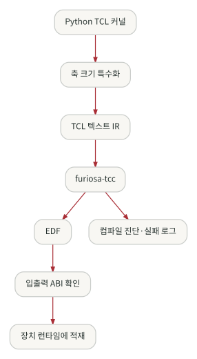

TCL(Tensor Contraction Language)은 Python에 포함된 eDSL(embedded Domain-Specific Language)이다. 일반 Python 함수처럼 보이지만, 커널이 기술한 계산을 컴파일러가 분석할 수 있는 표현으로 만든다. 텐서 contraction과 축의 의미를 남기는 것이 핵심이다. Python 반복문을 CPU에서 실행한 결과를 EDF로 저장하는 방식이 아니다. 공식 TCL 소개
EDF 표기 · 공식 문서에서 EDF는 컴파일된 실행 바이너리를 가리킨다. 이 조사에서 EDF의 공식 영문 풀네임을 일관되게 확인하지 못했으므로 임의로 확장하지 않는다.
.edf와 SDKRunnable.serialize()의 결과도 같은 파일 형식이라고 가정하지 않는다.
실습 준비와 파일 배치
이 장은 설치된 SDK로 새 커널을 만드는 실습이다. 호환되는 furiosa.tcl, furiosa.torch, torch, furiosa-tcc가 같은 개발 환경에 있어야 하며, 실행 단계에는 정상 동작하는 RNGD와 드라이버가 필요하다. SDK 설치는 공식 prerequisites, 장치 확인은 3장을 따른다. kernels.py, emit_tcl.py, run_edf.py를 새 작업 디렉터리에 만들고 세 파일이 있는 디렉터리에서 명령을 실행한다. 소스 파일을 읽는 eDSL 경로를 재현하도록 노트북 셀 대신 .py 파일을 사용한다.
python -c "import torch, furiosa.tcl, furiosa.torch; print(torch.__version__)"
furiosa-tcc --help
furiosa-smi info
import 성공은 패키지 접근을, SMI 출력은 장치 상태를 확인한다. 아직 커널 컴파일이나 NPU 계산을 검증한 것은 아니다. 아래 예제의 shape는 하나로 고정했으며, 다른 크기는 별도 컴파일·버킷 계약을 요구한다.
실습 파일을 그대로 내려받을 수 있다: kernels.py, emit_tcl.py, run_edf.py. 세 파일을 같은 디렉터리에 저장한다.
1. 두 종류의 데코레이터
FuryNo5가 사용 중인 SDK 경로에는 @tcl.kernel과 @tcl.tensor_operation이 함께 나온다. 전자는 커널의 입력·출력 텐서와 논리 축을 선언하고, 후자는 커널 내부에서 조합할 계산 표현을 구성한다. 아래 예제는 저장소의 aten_kernels.py와 같은 API 표기를 따른다. 실제 커널 정의권한 필요
# kernels.py — FuryNo5의 2026.4 계열 SDK 사용 방식에 맞춘 예제
from __future__ import annotations
import furiosa.tcl as tcl
@tcl.tensor_operation
def bf16_dot(left, right, output_axes):
wide = tcl.operation.contract(left, right, to=output_axes)
return tcl.commit.typecast(wide, tcl.bf16)
@tcl.kernel
def matmul_smoke(
left: tcl.Tensor[tcl.bf16, [M, K]],
right: tcl.Tensor[tcl.bf16, [K, N]],
) -> tcl.Tensor[tcl.bf16, [M, N]]:
return bf16_dot(left, right, [M, N])
M,K,N은 TCL이 해석할 상징 축이다. 이 예제의 지연 annotation을 임의로 제거하거나, 같은 이름의 Python 정수로 바꿔 넣지 않는다. 커널을 구체적인 형상으로 만드는 단계에서 축 크기를 전달한다. to=[M,N]은 출력 축을 지정하며 K가 축약된다. 마지막 typecast는 출력 저장 형식을 BF16으로 정한다. BF16 입출력이라고 해서 모든 중간 단계가 반드시 BF16인 것은 아니다.
공식 개발자 소개 페이지는 tcl.bf16[M,K] 및 out=처럼 다른 시기의 짧은 표기도 보여준다. 이 핸드북의 실습은 FuryNo5 소스에서 확인한 tcl.Tensor[...] 및 to= 경로를 사용한다. API 표기를 서로 섞지 말고 설치된 SDK에 맞춘다. 공식 개발자 페이지
2. shape를 정하고 텍스트 IR을 만든다
IR(Intermediate Representation)은 컴파일러가 다루는 중간 표현이다. 여기서는 특수화한 TCL 커널의 .dsl을 파일로 내보낸다. 다음 스크립트는 커널이 정의된 파일과 같은 디렉터리에 둔다.
# emit_tcl.py — NPU 실행을 하지 않고 TCL 소스를 생성한다.
from pathlib import Path
import furiosa.tcl as tcl
from kernels import matmul_smoke
sizes = {"M": 32, "K": 128, "N": 64}
specialized = tcl.specialize_kernel(matmul_smoke, sizes)
kernel = specialized if isinstance(specialized, tcl.Kernel) else tcl.Kernel.from_edsl(specialized)
Path("matmul.tc").write_text(kernel.dsl)
print("wrote matmul.tc", sizes)
FuryNo5의 export_single_aten()도 커널을 선택한 뒤 specialize_kernel → Kernel.from_edsl → .dsl 순서로 소스를 얻는다. 입출력 바인딩과 shape·dtype·stride 계약은 별도로 유지한다. 특수화와 TCL 생성권한 필요
이때 M=32로 컴파일했다면 M=33도 자동으로 지원한다고 말할 수 없다. 다른 크기를 패딩해서 같은 커널에 넣을지, 다른 버킷을 선택할지, 다시 컴파일할지는 위쪽 실행 계약이 결정한다. 버킷은 6장에서 별도로 다룬다.
3. 컴파일러가 EDF를 생성한다
python emit_tcl.py
furiosa-tcc --version
furiosa-tcc --help
furiosa-tcc --target-npu renegade-8pe --no-compiler-cache \
--output matmul.edf matmul.tc
이 호출 형태는 FuryNo5의 tcl_compiler.py와 compile_job.py에서 확인했다. --no-compiler-cache는 이 프로젝트 경로의 선택이며 모든 사용자에게 캐시를 꺼야 한다는 권고가 아니다. SDK에 따라 target 이름과 지원 옵션이 달라질 수 있으므로 --help가 기준이다. 컴파일 설정권한 필요, 실제 subprocess 명령권한 필요

그림의 구조 보기
flowchart TB
P["Python TCL 커널"] --> S["축 크기 특수화"]
S --> T["TCL 텍스트 IR"]
T --> C["furiosa-tcc"]
C --> E["EDF"]
C --> X["컴파일 진단·실패 로그"]
E --> A["입출력 ABI 확인"]
A --> R["장치 런타임에 적재"]컴파일러 내부에서는 타일·엔진·배치·메모리·스케줄 선택이 필요하다. 순서와 패스 이름은 컴파일러 버전에 따라 달라질 수 있다. 생성된 EDF는 그 선택의 결과다. TCL 문법이 맞음, EDF 생성 성공, 장치 로드 성공, 정답 일치를 네 단계로 나누어 기록한다.
4. EDF 로드와 장치 실행
아래는 같은 버킷의 행렬곱 한 개를 실행하는 재현용 예제다. 호출 API는 저장소와 대조했으며, 이 핸드북 작성 환경에는 RNGD가 없어 실제 장치 실행 결과를 주장하지 않는다. Python 패키지·컴파일러·드라이버가 호환되는 RNGD 머신에서 실행한다.
# run_edf.py — NPU와 호환 SDK가 필요하다.
from pathlib import Path
import torch
import furiosa.torch as sdk
sdk.config.set_cpu_fallback(False)
sdk.set_fusion(8)
sdk.set_mesh_kind(sdk.MeshKind.Single())
ir = sdk.ir.Runnable.from_serialized_edf(Path("matmul.edf").read_bytes())
if ir.expected_num_fusion != 8:
raise RuntimeError("EDF fusion contract does not match the requested device")
if len(ir.input_dram_shapes) != 2 or len(ir.output_dram_shapes) != 1:
raise RuntimeError("Unexpected EDF input/output arity")
print("ABI input shapes:", ir.input_dram_shapes)
print("ABI output shapes:", ir.output_dram_shapes)
program = sdk.Runnable(ir).to("furiosa:0")
left = torch.ones((32, 128), dtype=torch.bfloat16)
right = torch.ones((128, 64), dtype=torch.bfloat16)
left_device = left.to("furiosa:0")
right_device = right.to("furiosa:0")
with torch.inference_mode():
value = program(left_device, right_device)
if isinstance(value, (tuple, list)):
if len(value) != 1:
raise RuntimeError("Expected one result")
value = value[0]
actual = value.cpu()
torch.testing.assert_close(actual, left @ right, rtol=0, atol=0)
print("single-shape all-ones smoke check passed")
앞 절의 컴파일이 성공하여 같은 디렉터리에 matmul.edf가 생긴 뒤 실행한다.
python run_edf.py
EDF loader와 fusion 검사는 tcl_compiler._verify_abi()를, 외부 sdk.Runnable(...).to(device)와 결과 전달은 direct_runtime.py를 참고했다. 입력 ABI의 개수 확인만으로 논리적 shape와 모든 물리 배치가 완전히 증명되는 것은 아니다. FuryNo5도 일반 loader 메타데이터만으로는 논리→물리 매핑을 unknown으로 남긴다. ABI 확인 코드권한 필요, 런타임 객체 사용권한 필요
모든 원소가 1인 예제는 K=128의 합을 검증하기 쉽다. 이 검사는 연결·형상·기본 계산의 smoke test이며 수치 검증을 대신하지 않는다. 포팅 승인에는 서로 다른 값, 경계값, 양수·음수, 지원 dtype, stride·shape 범위, 반복 실행·가중치 변경을 별도로 검증한다.
5. 커널은 호출할 때마다 컴파일되는가
위 실습은 컴파일 후 로드하고 여러 번 실행하는 구조다. NPU 호출 한 번마다 furiosa-tcc를 실행하지 않는다. 동적 그래프·eager 경로에서는 새 연산 조합·형상이 처음 나타날 때 다른 컴파일 경로를 탈 수 있지만, 이것을 모든 Torch 함수 호출의 공통 동작으로 설명해서는 안 된다.
FuryNo5는 소스·계약·SDK·compiler identity·flags를 키로 보존된 EDF를 재사용하는 경로를 가진다. 바이트 해시와 ABI를 다시 확인하고 재사용 여부를 기록한다. 동일 함수 이름만으로 캐시를 공유하지 않는 이유는 수식이 같아도 shape·dtype·장치 설정이 다른 실행 파일일 수 있기 때문이다. 소스 캐시 구현권한 필요
6. 몇 개의 TCL을 합치면 항상 빨라지는가
연산을 합치면 경계의 전송·호출을 줄이고 데이터를 재사용할 기회가 생긴다. 반대로 한 번에 보이는 그래프가 커지면 컴파일 탐색 비용과 동시에 살아 있는 중간 텐서가 늘 수 있다. SDK 2026.3 소개는 TCL kernel을 조합해 단일 단위로 컴파일할 수 있다고 설명하지만, 모든 조합의 성능 향상을 보장하지 않는다. TCL 조합의 설계 목적
따라서 실험 기록에는 분리한 커널 수, 호출 수, 중간 HBM 전송량, 최대 live memory, 컴파일 시간, warm 실행 시간, 정확성을 함께 남긴다. 크기가 큰 한 TCL과 작은 여러 TCL 중 무엇이 좋은지는 이 측정으로 선택한다. FuryNo5의 우선순위는 7·11장에서 구체적으로 연결한다.
7. 최신 기능을 2026.4 예제에 섞지 않는다
2026.5 beta release note의 furiosa-tcc --evaluate-tcl은 EDF를 생성하지 않고 TCL IR 비용을 추정하는 기능이다. 추정치가 실제 장치 지연을 의미하지 않으며 2026.4.0에 존재한다고 가정하지 않는다. 2026.5.0b0 release note
Rust vISA의 cargo furiosa-opt compile --dump-schedule은 별도 컴파일 경로다. 임의의 TCL EDF를 schedule viewer 입력으로 열 수 있다고 확인되지 않았다. TCL 병목을 Rust로 재현하려면 동일 수식·shape·dtype·mapping·오차 기준을 맞추고, 다른 커널로 바꿨다는 사실을 기록해야 한다.
출처
| 근거 | 확인한 내용 |
|---|---|
| 공식 TCL 도입 배경 | TCL과 EDF의 관계 |
| FuryNo5 aten_kernels.py권한 필요 | 두 데코레이터·축·contraction |
| tcl_edf.py권한 필요 | 특수화·소스 생성 |
| tcl_compiler.py권한 필요 | cache·공식 EDF loader·ABI |
| compile_job.py권한 필요 | CLI 호출·오류 기록 |
| direct_runtime.py권한 필요 | Python Runnable·장치 실행 |
| 2026.5 beta 변경 | 비용 추정 기능의 버전 경계 |
FuryNo5 소스 링크는 비공개 저장소 권한이 필요할 수 있다. 이 장의 예제는 실제 코드를 읽어 구성한 재현 절차이며 이 핸드북에서 NPU 실행 결과를 새로 얻은 것은 아니다.